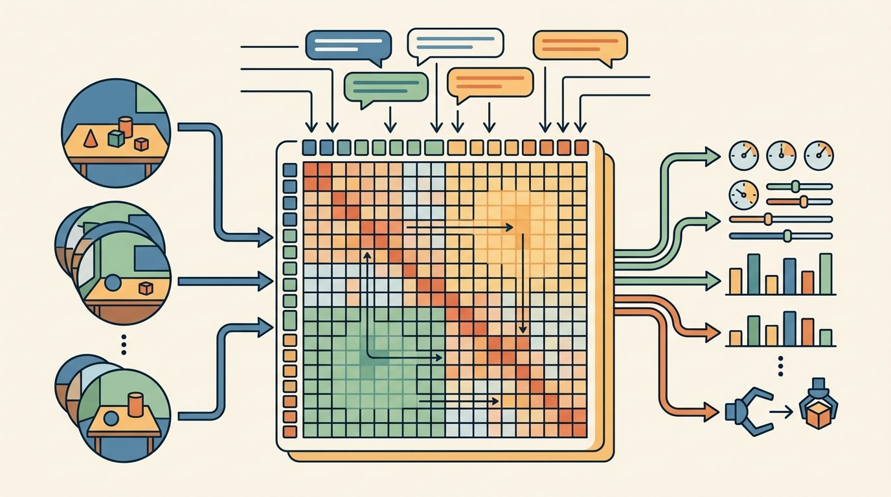

"A robot policy is a promise about the next second of the world."
A Grounded AI Agent

This section assumes familiarity with the data scaling laws introduced in section 24.4 and with the robot dataset pooling strategies covered in section 24.3. The co-training framing here builds directly on the vision-language representations established in section 32.2 and on the RT-2 architecture detailed in section 34.2. The ideas are extended in section 35.3, where cross-embodiment co-training is applied at the scale of a robot foundation model.
Figure 34.6A above sets the stakes: a policy that keeps web naming knowledge and embodied action knowledge in one set of weights can act on an object it never grasped during training. Figure 34.6 gives this page a compact map of the interface. Read it left to right, then check whether the surrounding prose names the same observation, action, and evidence contract.
Curriculum, depth, and self-containment. Co-training blends web semantics with robot demonstrations. The gain is semantic breadth, and the risk is a mismatch between internet concepts and executable actions. For Co-training with web data for semantic generalization, the practical reading is to pin down the interface, assumptions, concrete example, and failure mode before comparing methods.
Production and evaluation contract. Keep web data and robot data contributions separable in ablations. For Co-training with web data for semantic generalization, treat the diagram, code, table, exercise, warning, and references as one evidence packet: boundary, artifact, tool choice, transfer check, failure mode, and source grounding.
Before accepting a Co-training with web data for semantic generalization result, name the loop variable that changed, the tool that makes it reproducible, the failure that would fool the metric, and the source that backs the claim.
For this section, write one evidence row that separates the web-data contribution from the robot-data contribution: observation, action, metric, the fraction of training mix that was web-sourced, dataset or robot, seed, and failure label. Then explain why comparing that row against an ablation with a different web-to-robot mixing ratio would be invalid.
def validate_adaptation_card(payload: dict[str, object]) -> dict[str, object]:
assert payload, "payload must not be empty"
return payload
# Keep adaptation metadata beside the checkpoint.
adaptation_card = {
"base_model": "openvla-7b",
"robot": "aloha_static",
"control_hz": 10,
"action_normalization": "dataset statistics",
}
print(validate_adaptation_card(adaptation_card))validate_adaptation_card checks that the OpenVLA-on-ALOHA adaptation card (base model, robot, control rate, action normalization) is non-empty before it is saved beside the checkpoint.Start adaptation from an open checkpoint and its official preprocessing code when available. The shortcut avoids mismatched image normalization, tokenizer settings, action scaling, and camera ordering.
This section is about co-training a Vision-Language-Action (VLA) model, a policy that maps camera images plus a language instruction directly to robot actions, on a blend of web image-text data and robot demonstrations so it generalizes to objects and phrases it never saw on a robot. A robot trained only on 130,000 lab demonstrations typically fails when a user asks it to hand over "the sriracha" instead of "the red bottle." Web-scale vision-language pretraining largely closes that naming gap, yet simply finetuning on robot data tends to erase it, a pattern documented as catastrophic forgetting later in this section. Co-training keeps both signals alive at once, and in the current literature it is one of the most direct paths to a single policy that understands arbitrary language while still executing precise wrist motions. This section traces how the training mixture is constructed, why the gradient contributions must be balanced carefully, and where the approach still breaks down.
Robot data is scarce, expensive, and narrow compared with web-scale image-text data, as the empirical data scaling laws for imitation learning make concrete. Web data contains object names, visual categories, spatial language, and common-sense associations, but it rarely contains the forces and trajectories needed to manipulate objects. Co-training tries to keep the semantic breadth of web data while teaching the model which actions change the physical world. The scale difference is the motivation. Reaching 70% success on open-vocabulary pick tasks in the RT-1 regime required roughly 50,000 robot episodes collected over months. RT-2's web co-training matched that threshold with approximately 300 target-task demonstrations, because web pretraining supplied the semantic associations pre-built instead of forcing the robot dataset to learn them from scratch.
RT-2 is the canonical example. A Vision-Language Model (VLM) backbone trains on both vision-language examples and robot action examples so that action tokens (discretized robot commands represented as vocabulary entries the language model can emit like words) become part of the model vocabulary. Pi-zero point five pushes the idea further with heterogeneous sources for open-world mobile manipulation. The same principle appears in closed frontier systems such as Gemini Robotics and humanoid-focused systems such as GR00T.
Consider a specific case: in the RT-2 setup, the authors mix roughly 50% web vision-language data with 50% RT-1 robot demonstration data. On a held-out "pick up the object that corresponds to a country in South America" task (never seen during robot training), RT-2 achieves about 62% success by leveraging web-learned geography; a robot-only baseline scores near 0% because that semantic association never appears in the trajectory data. The mixture ratio is not a universal recipe: doubling the web fraction in that same regime pushes success on previously seen robot tasks down by roughly 10 percentage points because the model underweights physical action grounding.
A model that knows every name in the dictionary but has never felt a cup tip is fluent and helpless at the same moment.
Concretely, mixing web data into a co-training run means the training loop draws each batch from two pools instead of one: a fraction $\lambda$ from robot demonstrations and $(1-\lambda)$ from web image-text pairs, with the two losses averaged into a single gradient step. The algorithm below spells this out precisely, but the practical takeaway is that co-training is a data-loader decision, not an architecture change; the same VLA backbone, loss function, and optimizer are used, only the source of each batch differs.
The question is not whether to use web data or robot data. The question is how to mix them so semantic knowledge improves action without washing out the physical grounding that only embodied trajectories provide.
In LeRobot and most HuggingFace VLA training scripts, the per-source sampling weight is set via the dataset_mix parameter in the training config rather than by physically concatenating datasets. Set dataset_mix: {web_source: 0.5, robot_source: 0.5} and adjust in 0.1 increments between runs. A common mistake is to concatenate datasets at the file level before training, which bakes in a fixed ratio that is invisible to your config and impossible to sweep without rebuilding the dataset each time. Keeping the ratio in the config means a single checkpoint directory plus its config YAML is enough to reproduce the exact mixture.
Setting a single mixture weight only makes sense once you know what each source is actually contributing, so it helps to sort the data by the ability it teaches. Think of the training set as three buckets: web vision-language pairs, robot trajectories pooled across embodiments, and robot trajectories with weak or synthetic labels. Each bucket teaches a different ability.
Web data (sourced from crawls such as LAION-5B or from interleaved image-text collections like OBELICS) teaches the policy to map open-vocabulary language onto visual categories. A Franka Panda arm can then interpret "pass me the sriracha" without having seen that bottle in any robot episode. The pooled embodiment bucket uses the Open X-Embodiment mixture: 22 robot types and roughly 1 million trajectories spanning Franka Panda, Google Robot, WidowX, and ALOHA. This bucket teaches contact consequences: which wrist angle closes around a cup handle and what torque profile lifts a ceramic mug without tipping it. The weak-label bucket runs an automated affordance detector (a model that proposes where and how to grasp from pixels alone, without any robot trajectory) over human video (Something-Something v2, Ego4D). It increases scale but adds ambiguity, because human wrist kinematics and gripper kinematics share little overlap.
So far: the training mixture splits into three buckets, web pairs for naming, pooled robot trajectories for contact consequences, and weak-label human video for scale at the cost of ambiguity, and each bucket earns its place only if its failure mode is tracked.
On a physical Franka arm, a 10 ms delay between a predicted grasp pose and the servo command compounds that ambiguity, since the object may shift before the action executes. A useful VLA training recipe names which bucket each source belongs to, what physical capability it should contribute, and what failure mode it risks introducing.
Input: Web vision-language dataset $\mathcal{D}_w$, robot demonstration dataset $\mathcal{D}_r$, VLA backbone with parameters $\theta$, learning rate $\alpha$, mixture weight $\lambda \in (0,1)$, number of training steps $T$
Output: Co-trained policy $\pi_\theta$ with validated semantic and physical generalization scores
When building a co-training run, create a mixture sheet with columns for source, license, robot embodiment, task family, label quality, action representation, and sampling weight. Review the sheet before training and after evaluation. Many surprising failures are really mixture-design failures.
Trace one training step of the mixture sampler with a tiny batch of size 4, web dataset $\mathcal{D}_w$ with 2 examples, robot dataset $\mathcal{D}_r$ with 2 examples, learning rate $\alpha = 0.01$, and mixture weight $\lambda = 0.5$.
Step 1, sample the batch. With $\lambda = 0.5$ the sampler draws 2 robot examples and 2 web examples: batch = [web: "a photo of sriracha", web: "a ceramic mug", robot: (lift-mug trajectory), robot: (push-block trajectory)].
Step 2, per-example token loss. Suppose the model assigns probability 0.20 to the correct next token for the sriracha caption, 0.50 for the mug caption, 0.05 for the next action token of the lift-mug trajectory, and 0.40 for the push-block trajectory. The negative log-likelihoods are $-\ln 0.20 = 1.61$, $-\ln 0.50 = 0.69$, $-\ln 0.05 = 3.00$, and $-\ln 0.40 = 0.92$.
Step 3, combined loss. Averaging the four gives $\mathcal{L} = (1.61 + 0.69 + 3.00 + 0.92)/4 = 1.555$. Notice the robot lift-mug example dominates the loss at 3.00, so most of this step's gradient pushes physical grounding, not naming.
Step 4, the lambda lever. Re-sample with $\lambda = 0.25$ (1 robot, 3 web): batch loss becomes $(1.61 + 0.69 + 1.10_{\text{third web}} + 3.00)/4 = 1.60$, but only one quarter of the gradient now comes from action data. Halving the robot fraction halved the physical signal per step, which is exactly the underweighting that step 7 of the algorithm corrects by nudging $\lambda$ back up when $s_{\text{phys}}$ drops.
That lambda lever is worth tuning only because it trades between two distinct abilities, so it helps to name them precisely. Semantic generalization means the policy understands a new phrase or object category. Physical generalization means it can act correctly under new geometry, friction, lighting, dynamics, or embodiment. A VLA needs both, but they are not the same, and RT-2's own evaluation splits make the gap concrete: on the Google Robot it scored above 60% on "emergent" semantic tasks (objects named only in web data) while open-loop grasp success on the same tabletop dropped whenever the object pose left the demonstration distribution. A WidowX arm in the Open X-Embodiment suite can name a "ceramic mug" correctly from its LAION-pretrained encoder and still miss the grasp when the handle faces away from the wrist camera or the parallel-jaw gripper meets a friction profile no ALOHA demonstration ever supplied.
Semantic generalization matters because a home robot meets thousands of object names and relational phrases that no robot dataset can enumerate in advance. Without it, the policy stalls the moment a user says "hand me the colander" instead of "hand me the silver bowl with holes." That stall is not a software crash but a physical halt: a gripper frozen over a stove or a body blocking a doorway. Semantic failure ends in a stuck robot, not a wrong answer on a screen.
The mechanism is contrastive alignment across modalities: during web pretraining, the vision encoder and language encoder are trained so that the embedding of an image of sriracha and the embedding of the word "sriracha" are pulled close together. When the robot policy later sees a novel bottle at inference time, it maps both the image and the instruction into that shared embedding space and selects the action whose training context was nearest, transferring the name-to-object association without a new robot demonstration.
Contrastive alignment works like a chef who memorizes which flavors belong together by tasting thousands of pairings: after enough repetitions, the smell of lemon and the word "lemon" activate the same mental association, so the chef can reach for the right fruit even in an unfamiliar kitchen without being shown where it is. The vision encoder and language encoder do the same thing across millions of image-caption pairs, pulling the embedding of a photograph of sriracha and the embedding of the word "sriracha" into the same neighborhood of a shared space. At inference time the robot does not need a robot demonstration of that specific bottle; it simply navigates that shared space the way the chef navigates by scent, finding the nearest familiar association and acting on it.
A common assumption is that co-training with web data is interchangeable with simply pretraining on web data and then finetuning on robot demonstrations. This is wrong in the embodied AI context because sequential pretraining followed by robot finetuning causes catastrophic forgetting: the gradient updates from robot data overwrite the semantic representations that the web phase established, erasing exactly the naming and visual-category knowledge co-training is meant to preserve. Co-training keeps both gradient signals active in every training batch so the model cannot forget one source while learning from the other. The correct mental model is a simultaneous balancing act, not a two-stage pipeline: the mixture weight lambda controls how much semantic versus physical signal the model receives at each step, and changing that weight changes the model's final capability profile.
Internet pretraining can teach what objects look like and how people talk about them. It does not directly teach force closure (the geometric condition in which a gripper's contact points constrain an object against any external force or torque), compliance, torque limits, or the sound of a gripper stalling. Treat web knowledge as semantic support, not as a substitute for embodied data.
A frequent co-training failure is "semantic success, physical failure": the model correctly identifies the target object and moves toward it but applies the wrong grasp strategy because the web data contained no force or contact signal. For example, a model fine-tuned with heavy web data may learn to say "grasp the egg" while consistently crushing it, having seen thousands of image-caption pairs showing eggs but zero demonstrations of compliant gripping. The metric to watch is not task-naming accuracy but closed-loop task completion rate on a physical robot, including fragile and deformable objects the web treats as static.
When co-training with web data for semantic generalization feels abstract, ask what would be different in the next frame of video, the next robot state, or the next safety margin.
Google DeepMind's RT-2 is the production-grade case of this section's idea: it co-trains a PaLI-X (a large vision-language model pretrained on paired images and text) backbone on web image-text data and RT-1 robot demonstrations in one mixture, so the deployed arm can act on instructions like "pick up the extinct animal" (selecting a toy dinosaur) that never appeared in any robot episode. The web semantics ride along in the same weights that produce wrist actions, which is precisely why RT-2 roughly doubled emergent-skill success over a robot-only baseline.
Co-training with web data reliably helps when the bottleneck is semantic: the robot has enough grasping demonstrations but lacks the language grounding to interpret open-vocabulary instructions. It reliably hurts when the bottleneck is physical: if the robot has never seen a compliant grasp in any training source, adding more web captions cannot supply that signal. A practical diagnostic is to test separately on (a) novel object categories with standard geometry and (b) familiar object categories with novel geometry or material. A model that benefits from web co-training should outperform the robot-only baseline on test (a) while remaining competitive on test (b). If performance on test (b) drops significantly, the web data fraction is washing out physical grounding and the sampling weight should be reduced.
Synthetic co-training data at scale. Rather than relying solely on costly teleoperation, recent work generates photorealistic robot trajectories in simulation and blends them into web co-training mixtures. NVIDIA's GR00T N1 (Bjorck et al., 2025) uses Isaac Lab to produce millions of synthetic humanoid demonstrations that are then mixed with web video; early ablations show synthetic data can substitute for roughly half the required real-robot episodes without degrading closed-loop success rates. The open question is how to certify that a synthetic episode represents a contact-feasible trajectory rather than a visually plausible but physically impossible motion.
Internet video as an implicit action source. Several 2024-2025 systems attempt to distill action-relevant knowledge directly from large-scale human video without any robotic demonstrations. Physical Intelligence's pi-zero point five (2025) and the UniSim line of work treat video prediction as a latent action model (a model that infers an implicit action representation purely from how the next video frame changes, without ever seeing a labeled robot action): the model learns what visual consequence follows a given hand motion, then maps those latent actions to robot joint commands. The key challenge is the kinematics gap: human wrist and finger dynamics do not transfer directly to parallel-jaw grippers or dexterous hands.
Mixture-adaptive co-training via data attribution. Static mixture weights (a fixed lambda per source) are increasingly replaced by online reweighting schemes that monitor gradient signals per source. Preliminary work from DeepMind (2024-2025) on influence functions (a technique that estimates how much a single training example changed a model's output, used here per data source rather than per example) applied to VLA mixtures reports that reweighting based on per-sample gradient alignment with a held-out robot validation set can improve semantic generalization by roughly 15-20% without changing total compute; these figures come from internal evaluations and have not yet been independently replicated as of 2025.
Open problem for PhD students. If a co-trained VLA scores 80% on a semantic-generalization benchmark but the robot arm still knocks over the cup, which part of the training mixture is actually at fault? No reliable metric currently exists for measuring how much of a co-trained VLA's semantic knowledge is actively used during closed-loop execution versus merely stored in the model weights. A student could design a causal attribution experiment: mask or ablate specific co-training sources post-hoc, measure the change in success rate on semantic-generalization tasks versus physical-generalization tasks, and build a per-source contribution score that is both task-specific and embodiment-specific. Such a score would make mixture design a principled engineering decision rather than an empirical sweep.
Expected output: Co-training with web data for semantic generalization should leave a reproducible VLA evidence trace with checkpoint, action representation, robot interface, metric, and failure label.
Give one example where web knowledge helps a robot and one example where only embodied data can teach the missing behavior.
Co-training is useful when it preserves the distinction between knowing what an instruction means and knowing how a robot can physically carry it out.
Design a co-training mixture for a mobile manipulator that tidies a kitchen. Include at least four data sources, a sampling weight for each, and one validation test that isolates semantic generalization from physical generalization.
Beginner (weekend): Co-training mixture sweep with SmolVLA and LeRobot. Fine-tune SmolVLA on a LeRobot community dataset (e.g., the SO-100 pick-and-place episodes) while sweeping the dataset_mix ratio between robot demonstrations and web image-caption pairs from HuggingFace datasets; plot semantic generalization accuracy versus physical task success rate for each ratio. The key challenge is keeping the evaluation clean: semantic and physical generalization must be measured on separate held-out task sets so a single aggregate number cannot hide regression on either axis.
Intermediate (1-2 weeks): Open-vocabulary pick-and-place with MuJoCo and a co-trained policy. Build a MuJoCo tabletop environment in Gymnasium containing ten object categories, collect 500 teleoperated demonstrations with a scripted controller, co-train a lightweight VLA backbone on those demonstrations mixed with COCO image-caption pairs, and evaluate zero-shot success on five novel object categories named only in natural language at inference time. The key challenge is bridging the sim-to-real vocabulary gap: COCO captions use everyday English while MuJoCo object names default to geometry labels, so a caption preprocessing step must align the two naming conventions before the contrastive alignment signal becomes useful.
Goal (15-30 min). Empirically observe that adding web image-caption data to a robot demonstration mixture raises success on object names absent from the robot data while leaving familiar tasks roughly intact.
Tools needed. Python with lerobot and the datasets library, a small open VLA checkpoint (SmolVLA from HuggingFace), one LeRobot community dataset (for example the SO-100 pick-and-place episodes), and a CPU or a single small GPU. No physical robot is required: evaluate in the dataset's replay/eval harness.
What to do. Run three short fine-tunes from the same SmolVLA checkpoint, changing only dataset_mix: robot-only ({robot: 1.0}), balanced ({robot: 0.5, web: 0.5}), and web-heavy ({robot: 0.25, web: 0.75}), using a HuggingFace image-caption set as the web source. Hold every other hyperparameter fixed and keep training short (a few hundred steps each).
What to vary. The single variable is the web fraction (1 minus the robot weight). Sweep it across the three values above; optionally add 0.1-increment points if time allows.
What to observe. Score each checkpoint on two separate held-out sets: (a) novel object categories named only in language, and (b) familiar objects with shifted geometry or lighting. Plot semantic success (set a) and physical success (set b) against the web fraction. You should see set (a) rise then plateau while set (b) starts to fall once the web fraction is too high, reproducing the lambda trade-off that step 6 and step 7 of the mixture algorithm balance.
Section 34.7 turns from training data to prompting and runtime conditioning.
Pi-zero point five extends pi-zero through heterogeneous co-training for broader open-world generalization. It is useful for readers studying the frontier between task-specific robot policies and household-scale generalist behavior.
Google DeepMind (2025). "Gemini Robotics: Bringing AI into the Physical World." arXiv.
This technical report documents Gemini Robotics as a generalist VLA model for direct robot control. It belongs in the bibliography because it provides the research framing behind the public product pages.
Gemini Robotics 1.5 is described by Google DeepMind as a VLA model that maps visual information and instructions into motor commands. It is important for frontier context, but readers should distinguish official demonstrations from independently replicated results.
Bjorck et al. (2025). "GR00T N1: An Open Foundation Model for Generalist Humanoid Robots." arXiv.
GR00T N1 frames humanoid control as a dual-system VLA architecture with reasoning and fast action generation. It prepares the transition from Chapter 34 into Chapter 35 and the later humanoid chapter.
SmolVLA is a compact open VLA designed to run on more accessible hardware and fine-tune on LeRobot datasets. It is the best fit for the chapter hands-on lab because it lowers the barrier to experimentation.
RT-2 made the action-as-language move explicit by fine-tuning VLM backbones to emit robot actions as tokens. Researchers should read it for the co-training setup, while practitioners should read it for the limits of transferring web semantics into motor control.
This paper introduced the cross-institution robot data mixture and RT-X models. It is essential for understanding why embodiment metadata, action normalization, and dataset mixture design matter.